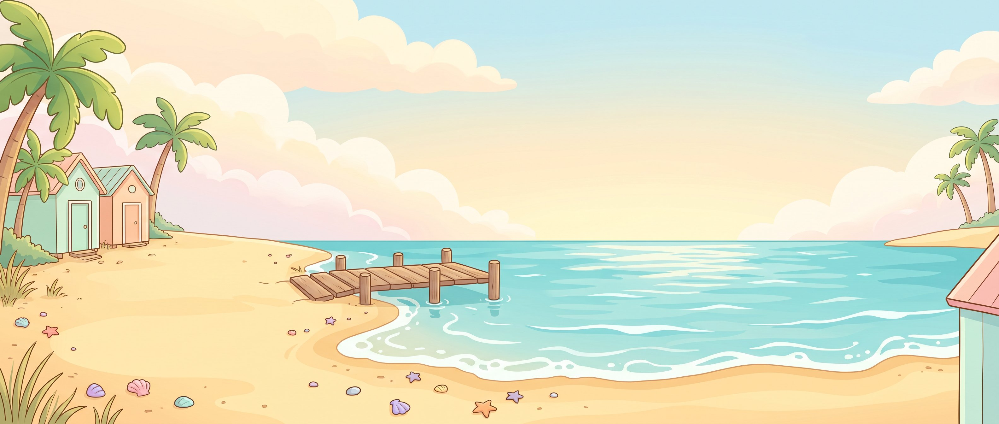

35 د
35 د 3,240
3,240 أكمل من حيث توقفتالأرنب الصادقالصفحة 6 من 10 · قصة مسموعة
أكمل
أكمل من حيث توقفتالأرنب الصادقالصفحة 6 من 10 · قصة مسموعة
أكمل

شاطئ الحكايات
اقرأ واستمع لقصص ممتعة مع السلحفاة سلمى

أهلاً يا عمر! أي حكاية نقرأ اليوم؟

اقرأ واستمع لقصص ممتعة مع السلحفاة سلمى
أهلاً يا عمر! أي حكاية نقرأ اليوم؟
أكمل من حيث توقفتالأرنب الصادقالصفحة 6 من 10 · قصة مسموعة
أكمل
 قصة مسموعة
قصة مسموعة أنت بطل القصة
أنت بطل القصة